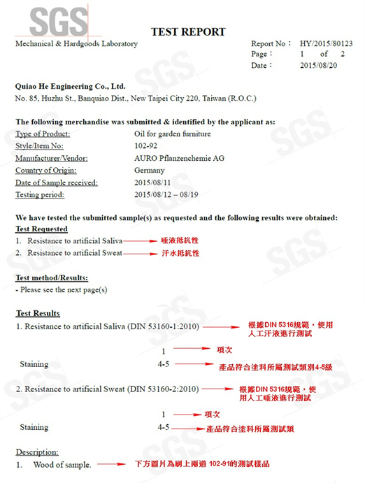

AURO各產品在成分、特性上皆有相關認證，確保客戶使用無虞， 根據產品法規認證提供一段簡短的說明描述文字
-
01
DIN 52615 "dry-wet-cup" 水蒸氣可透性
歐洲玩具安全標準，為強制性化學測試標準，檢測 19 種重金屬，檢測報告由台灣 SGS 發行， AURO 商品檢測結果皆為 N.D. 未檢出。
 -
02
EN 71-3 Toy safety
歐洲玩具安全標準，為強制性化學測試標準，檢測 19 種重金屬，檢測報告由台灣 SGS 發行， AURO 商品檢測結果皆為 N.D. 未檢出。
-
03
CNS 15503 兒童用品安全一般要求
歐洲玩具安全標準，為強制性化學測試標準，檢測 19 種重金屬，檢測報告由台灣 SGS 發行， AURO 商品檢測結果皆為 N.D. 未檢出。
-
04
DIN 53160 "Determination of the colour fastness"
歐洲玩具安全標準，為強制性化學測試標準，檢測 19 種重金屬，檢測報告由台灣 SGS 發行， AURO 商品檢測結果皆為 N.D. 未檢出。